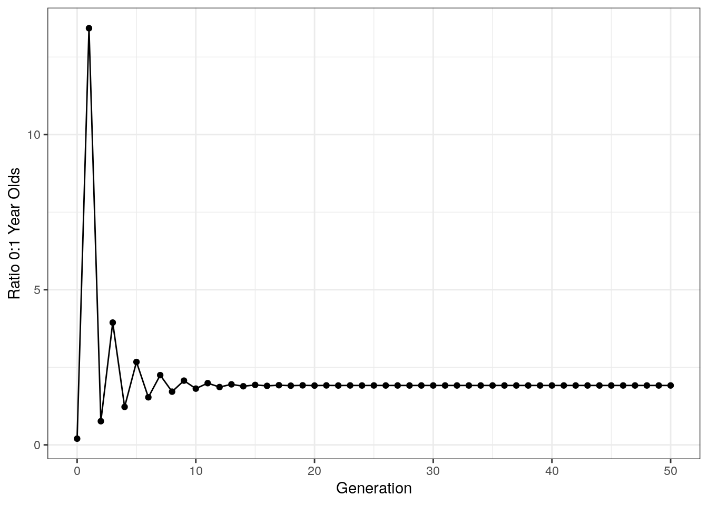

3.2 Class 3: Exponential Growth and Age Structure
Today, we’re looking at the exponential growth model, which describes how a population grows in the absence of density dependence - that is, when the growth rate doesn’t change in response to population size. First, we’ll plot exponential growth for one population at a given per capita growth rate.
# Initialize parameters
N <- 50 # Population Size
r <- 0.04 # Per capita growth rate
lambda <- 1 + r
n_generations <- 50
# Vector to keep track of population size
popSize <- c(N)
# Run simulation
for (i in seq(n_generations)){
N <- N * lambda # Calculate next generation
popSize <- c(popSize, N)
}
# Organize into data frame
df <- data.frame(
generation = seq(0, n_generations),
popSize = popSize
)
# Plot
ggplot(df, aes(x = generation,
y = popSize)) +
geom_point() +
xlab("Generation") +
ylab("Population Size") +
ggtitle("Exponential Growth") +
theme_bw()Next, plotting across multiple growth rates:
# Initialize parameters
n_generations <- 50
# Vectors to track variable
generations <- c()
popSizeList <- c()
growthRate <- c() # Tracking growth rate so that we can separate our data by rate when plotting
# Run simulation
for (growth_rate in c(-0.1, 0, 0.02, 0.04)){ # Loop through all the growth rates (i.e. run simulation once for each rate)
lambda <- 1 + growth_rate # Get lambda for the current growth rate
N <- 50 # Reset starting population size to 50
popSize <- c(N) # Track population size for current run of the simulation
# Run simulation for 50 generations
for (i in seq(n_generations)){
N <- N * lambda
popSize <- c(popSize, N)
}
# Update vectors with simulation output
generations <- c(generations, seq(0, n_generations))
popSizeList <- c(popSizeList, popSize)
growthRate <- c(growthRate, rep(lambda, n_generations + 1))
}
# Reorganize into a data frame
df <- data.frame(
generations = generations,
popSize = popSizeList,
growthRate = growthRate
)
# Plot
ggplot(df, aes(x = generations,
y = popSize,
color = factor(growthRate))) +
geom_point() +
xlab("Generation") +
ylab("Population Size") +
ggtitle("Exponential Growth") +
theme_bw() +
labs(color = "Growth Rate") # Change label of the color legendNotice that our population decreases when lambda < 1, stays constant when lambda = 1, and increases when lambda > 1.
3.2.1 Comparison to Real Data
I’ve pulled some data from Yoav et al. 2019, PNAS (https://doi.org/10.1073/pnas.1902217116). This data set tracks microbial growth across a series of plates. Reading in the data:
The data has three columns: Time.S - the time in seconds, Plate - the name of the plate that the culture is grown in, and Size - the size of the colony. First, plotting the size of the colony for the first 13,000 seconds:
ggplot(yoavData, aes(x = Time.S, y = Size, color = Plate)) +
geom_point() +
geom_line() +
theme(legend.position = "none") +
xlab("Time (Seconds)") +
ylab("Population Size") +
xlim(c(0, 13000)) +
ylim(c(0, 300000))Visually, this looks exponential. We can fit a curve to it. To do this, we can use the function lm() which fits a linear model. The tilde (~) symbol indicates the relationship we want to measure - in other words, this equation measures log(Size) as a function of Time. To make this an exponential fit, we take the log of the dependent variable:
We can plot this along the real-world data.
# Creating a dataframe from our function
xs <- seq(1, 60000) # Set the x values we want to evaluate
ys <- exp(10.067264) * exp(0.000182 * xs) # Get the corresponding values using coefficients from the fit
fit_line <-data.frame(Time.S = xs, # Convert to data frame
Size = ys,
Plate = "fit")
# Notice that the names we give above
# Match the names of the axes of our plotting data.
# We also give create a column "Plate" for color-coding
# Plot data
ggplot(yoavData, aes(x = Time.S, y = Size, color = Plate)) +
geom_point() +
geom_line() +
xlab("Time (Seconds)") +
ylab("Population Size") +
geom_line(data = fit_line, size = 1, color = "black") + # Plot the line of best fit
theme(legend.position = "none") +
xlim(c(0, 13000)) +
ylim(c(0, 300000)) Notice that when we add the line of best fit, we provide the argument data = fit_line. This tells ggplot that we are using a second data set not provided in the initial ggplot call.
Now, let’s plot our data extending further in time - this is done by changing the xlim arguments:
xs <- seq(1, 60000)
ys <- exp(10.067264) * exp(0.000182 * xs)
fit_line <-data.frame(Time.S = xs,
Size = ys,
Plate = "fit")
ggplot(yoavData, aes(x = Time.S, y = Size, color = Plate)) +
geom_point() +
geom_line() +
xlab("Time (Seconds)") +
ylab("Population Size") +
geom_line(data = fit_line, size = 1, color = "black") +
theme(legend.position = "none") +
xlim(c(0, 35000)) + # Changed x limits to see further into the Time
ylim(c(0, 800000)) Notice that as the population grows, the exponential model is an increasingly poor fit - the exponential model predicts continued growth at an increasing rate; the actual data shows growth slowing down until the population hits a plateau. We’ll look at this discrepancy in more detail next class!
3.2.2 Age Structure
Next, let’s look at age structured populations - that is a population where we track the ages of individuals and where individuals of different ages can have different reproduction rates and mortalities.
We’ll start with a simplified population of 0 and 1-year olds. In each generation, the number of 1 year olds in the next generation is determined purely by the number of 0 years olds that survive the year, and the number of 0 year olds is determined by the sum of the number 0 year olds and the number of 1 year olds that reproduce.
# Initializing parameters
# Initial numbers of 0 and 1 year olds
N0 <- 2
N1 <- 10
# Birth Rates for 0 and 1 year olds
f0 <- 0.4
f1 <- 1.8
# Death Rates
# Just for 0 year olds - all 1 year olds die
S0 <- 0.7
n_generations <- 50
# Empty vectors to store data
n0_list <- c()
n1_list <- c()
# Run simulation
for (i in seq(n_generations)){
# Calculate the number of 0 and 1 year olds in the next generation
N0_next_gneration <- N0 * f0 + N1 *f1
N1_next_generation <- N0 * S0
# Update values
N0 <- N0_next_gneration
N1 <- N1_next_generation
# Add to lists
n0_list <- c(n0_list, N0)
n1_list <- c(n1_list, N1)
}
# Organize into data frame
df <- data.frame(
n0 = n0_list,
n1 = n1_list,
generation = seq(n_generations)
)
# Convert to tall format
df <- melt(df, id.vars = "generation")
colnames(df) <- c("Generation", "Age", "PopulationSize")
# Plot
ggplot(df, aes(x = Generation, y = PopulationSize, color = Age)) +
geom_point() +
geom_line() +
theme_classic() +
ylab("Population Size") This looks like normal exponential growth, with slightly different rates for 0 and 1 year olds. However, let’s zoom in on early time points:
ggplot(df, aes(x = Generation, y = PopulationSize, color = Age)) +
geom_point() +
geom_line() +
theme_classic() +
ylab("Population Size") +
xlim(c(0, 10)) +
ylim(c(0,400))The last thing we want to do with this data is plot the ratio of 0 to 1 year olds:
# Initializing parameters
# Initial numbers of 0 and 1 year olds
N0 <- 2
N1 <- 10
# Birth Rates for 0 and 1 year olds
f0 <- 0.4
f1 <- 1.8
# Death Rates
# Just for 0 year olds - all 1 year olds die
S0 <- 0.7
n_generations <- 50
# Empty vectors to store data
ratio_list <- c(N0/N1)
# Run simulation
for (i in seq(n_generations)){
# Calculate the number of 0 and 1 year olds in the next generation
N0_next_gneration <- N0 * f0 + N1 *f1
N1_next_generation <- N0 * S0
# Update values
N0 <- N0_next_gneration
N1 <- N1_next_generation
# Add to list
ratio_list <- c(ratio_list, N0/N1) # Calculate the ratio of 0/1 year olds
}
# Organize into a data frame
ratioDf <- data.frame(
generations = seq(0, n_generations),
ratio = ratio_list
)
# Plot
ggplot(ratioDf, aes(x = generations,
y = ratio)) +
geom_point() +
geom_line() +
theme_bw() +
xlab("Generation") +
ylab("Ratio 0:1 Year Olds")
Notice that after an initial period of chaos, the ratio of age groups stabilizes. This is called the stable age distribution and is a general property of age structured models like this.
3.2.3 The Leslie Matrix
The Leslie matrix allows us to very efficiently extend age structured models to an arbitrarily large number of populations.
In the Leslie matrix L, the first row is the fecundity of each category, and the area beneath that has a diagonal arrangement of survival rates for each age category.
Note that for matrix multiplication, we use %*%.
# Leslie matrix
L <- matrix(data = c(0, 0, 0.1, 1.1, 1.8, 0.9, 0.4, 0.1,
0.4, 0, 0, 0, 0, 0, 0, 0,
0, 0.9, 0, 0, 0, 0, 0, 0,
0, 0, 0.8, 0, 0, 0, 0, 0,
0, 0, 0, 0.9, 0, 0, 0, 0,
0, 0, 0, 0, 0.8, 0, 0, 0,
0, 0, 0, 0, 0, 0.2, 0, 0,
0, 0, 0, 0, 0, 0, 0.1, 0), nrow = 8, ncol = 8, byrow = TRUE)
# Starting population size for each age class
pop_matrix <- as.matrix(c(1, 3, 2, 0, 6, 10, 25, 15))
# Starting population size for each age class
total_size <- c(sum(pop_matrix))
n_generations <- 40
# Run simulation
for (i in seq(n_generations)){
pop_matrix <- L %*% pop_matrix
total_size <- c(total_size, sum(pop_matrix))
}
# Organize data into a data frame
df <- data.frame(
year = seq(0, n_generations),
size = total_size
)
# Plot
ggplot(df, aes(x=year, y = size)) +
geom_point() +
geom_line() +
theme_bw() +
xlab("Time (Year)") +
ylab("Population Size")